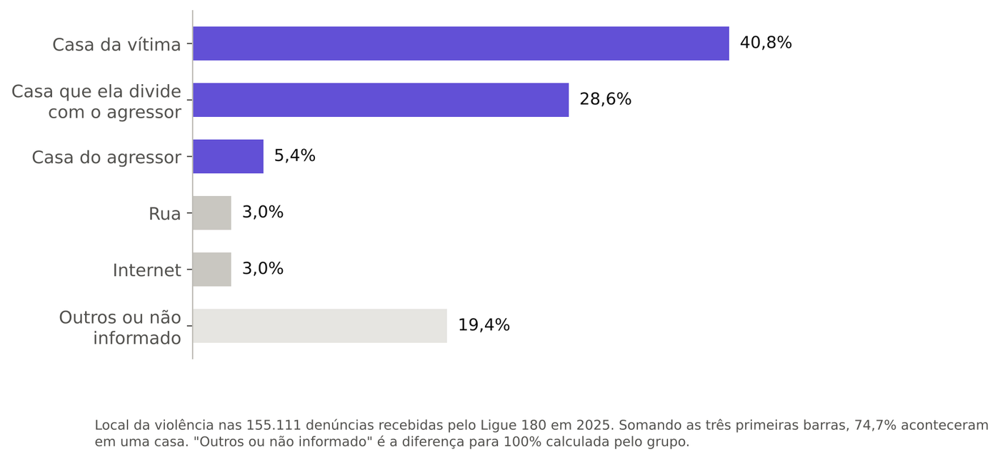
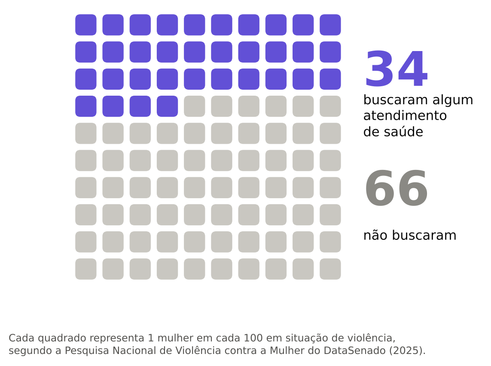
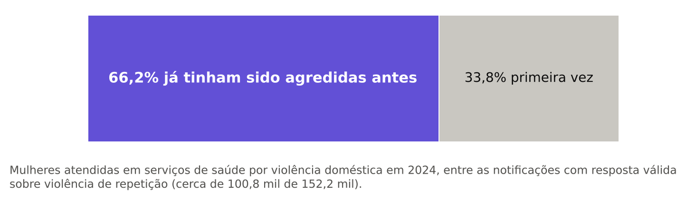
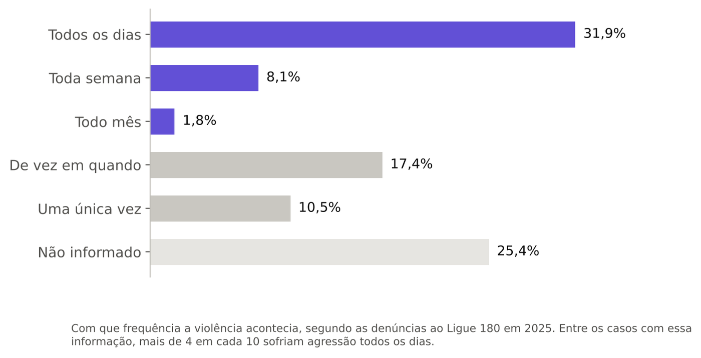
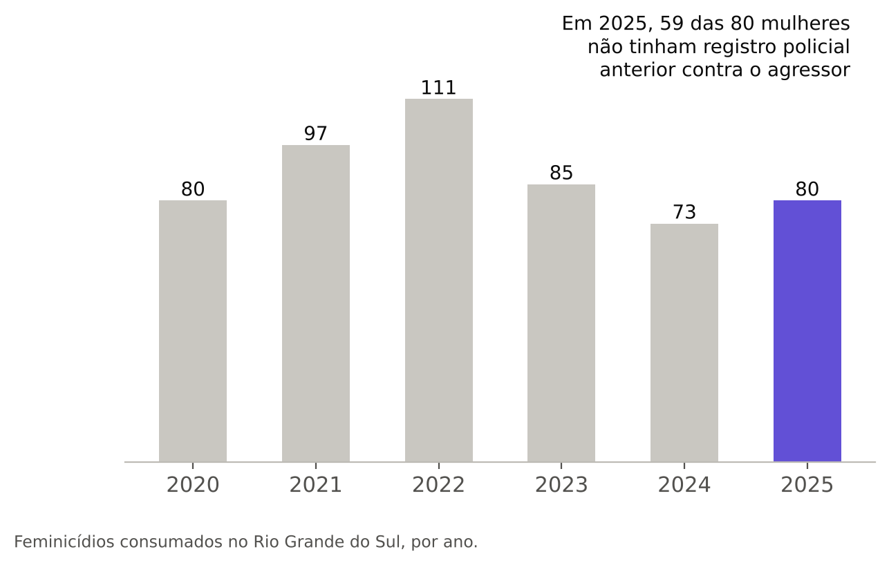
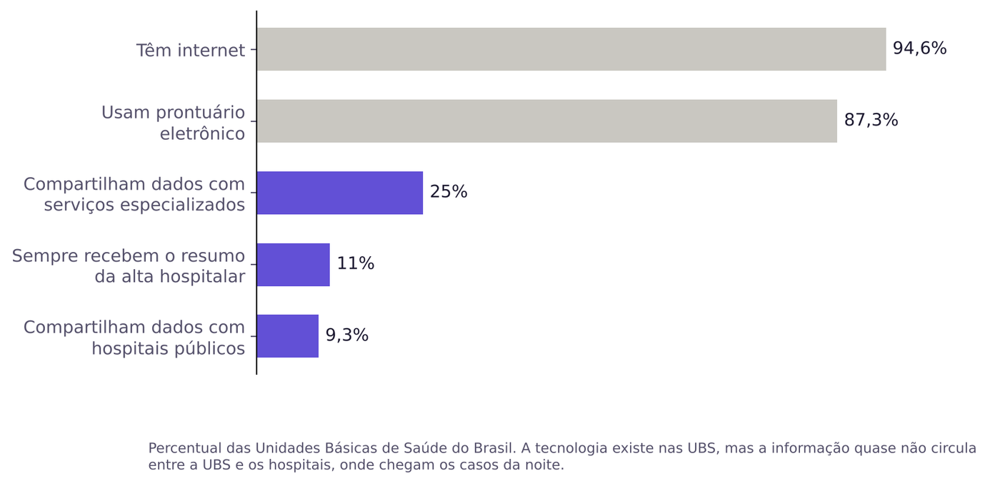
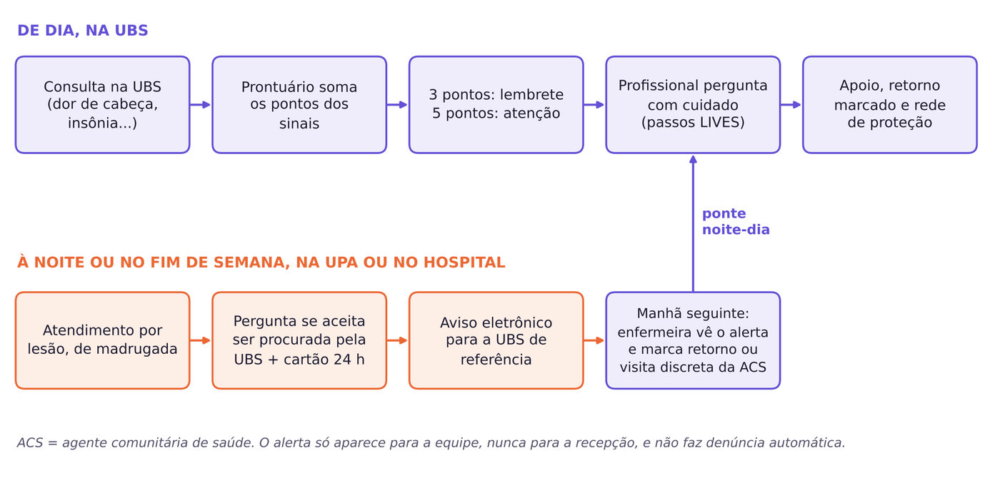

A violência doméstica muitas vezes já passou pelo posto de saúde antes de ser descoberta. Nós analisamos dados de 2024 e 2025 e criamos uma ferramenta simples para que a Unidade Básica de Saúde perceba esses sinais mais cedo.
Com contas simples, como transformar porcentagens em “x em cada 100” e comparar grupos, encontramos seis sinais de que a violência está passando despercebida.
Três em cada quatro denúncias relatam violência dentro de uma casa.

De cada 100 mulheres em situação de violência, 66 não buscaram atendimento de saúde.

Duas em cada três já tinham sido agredidas antes. Em 31,9% das denúncias, a agressão era diária.


Em 2025 foram 330 mil registros de violência contra meninas e mulheres no Sinan, pelo menos 900 por dia. A saúde já recebe essas mulheres. Falta usar a informação.
No RS, 59 das 80 mulheres mortas por feminicídio em 2025 não tinham registro policial anterior.

87,3% das UBS usam prontuário eletrônico, mas só 9,3% trocam dados com hospitais públicos, para onde vão os casos da noite.

Uma proposta para as Unidades Básicas de Saúde, feita com o que elas já têm: o prontuário eletrônico. São três partes que funcionam juntas.
Cada sinal soma pontos: queixas como dor de cabeça e insônia (+1), lesão (+2), atendimento à noite (+1), notificação anterior (+3). Com 3 pontos, o profissional recebe um lembrete para perguntar com cuidado.
Se a mulher é atendida de madrugada e aceita ser procurada, a UBS dela recebe um aviso. Na manhã seguinte, a enfermeira marca um retorno ou pede uma visita discreta da agente comunitária.
Um cartão pequeno, entregue com discrição, com Ligue 180, WhatsApp, Delegacia Online da Mulher, 190 e Sinal Vermelho.

“Às vezes, problemas em casa afetam a saúde da gente. Está tudo bem em casa? Alguém te machuca ou te faz sentir medo?”
| Cada consulta com queixa sem causa clara ligada à violência pela OMS (dor de cabeça, insônia, dor nas costas ou na barriga, ansiedade, tristeza) | +1 |
| Lesão física (machucado, corte, fratura) | +2 |
| Atendimento à noite, de madrugada ou no fim de semana | +1 |
| Já existe notificação de violência no sistema | +3 |
| 3 ou 4 pontos: lembrete. 5 ou mais: atenção. |
No posto de saúde também dá para pedir ajuda. E, se não puder falar, um X vermelho na palma da mão, mostrado em estabelecimentos do programa Sinal Vermelho, é um pedido de socorro.
Pesquisa bibliográfica e documental feita para a 14ª Mostra Científica e Tecnológica do Centro Tecnológico Universidade de Caxias do Sul (CETEC), em 2026. Não foram usados dados reais de pacientes.